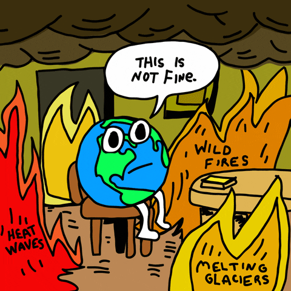

Perubahan iklim dan perubahan cuaca adalah dua hal yang berbeda, tetapi keduanya memiliki berbagai penyebab yang dapat mempengaruhi kondisi atmosfer dan iklim di Bumi.

Apasih penyebab bumi kita yang makin hari ini suhu derajatnya semakin naik?
Nah ini lohhh beberapa penyebab bumi kita mengalami perubahan cuaca serta iklim
Peningkatan emisi gas rumah kaca, seperti karbon dioksida (CO2), metana (CH4), dan nitrogen oksida (N2O) dari aktivitas manusia, seperti pembakaran bahan bakar fosil, deforestasi, dan pertanian, menyebabkan peningkatan suhu rata-rata di Bumi.
Praktek-praktek pertanian seperti pemakaian pupuk dan penggunaan hewan ternak dapat menghasilkan gas-gas rumah kaca, seperti metana dan nitrogen oksida.
Siklon adalah sistem tekanan rendah dengan angin berputar searah jarum jam (di belahan utara) yang seringkali membawa hujan dan cuaca buruk, sementara antisiklon adalah sistem tekanan tinggi dengan angin berputar searah jarum jam (di belahan utara) yang cenderung menghasilkan cuaca cerah dan stabil.